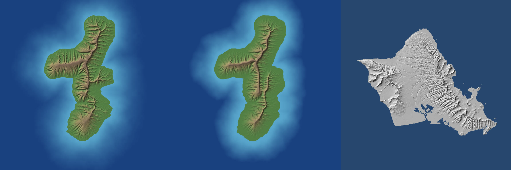
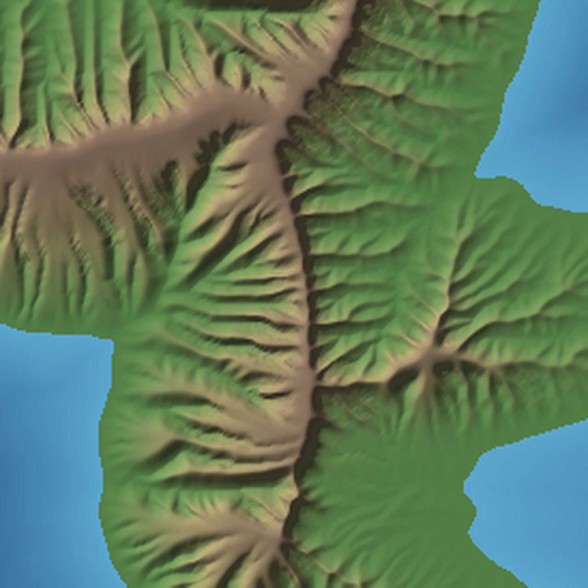
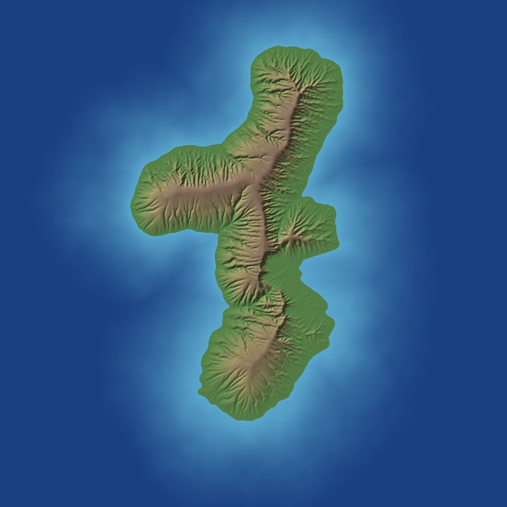
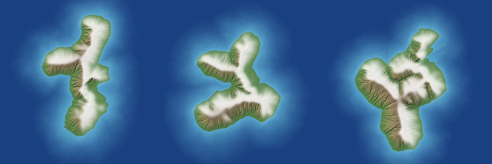
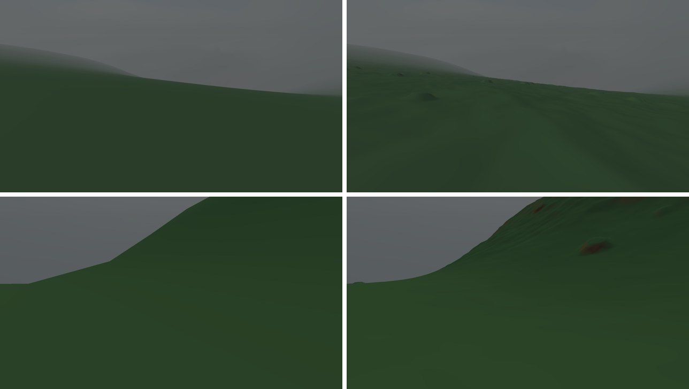
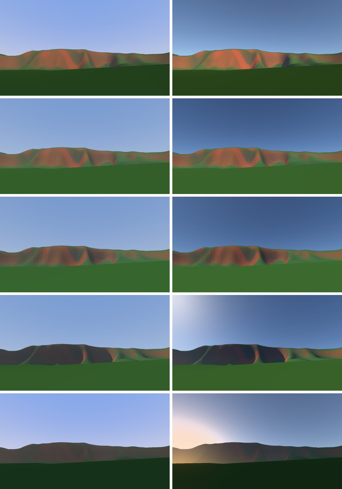
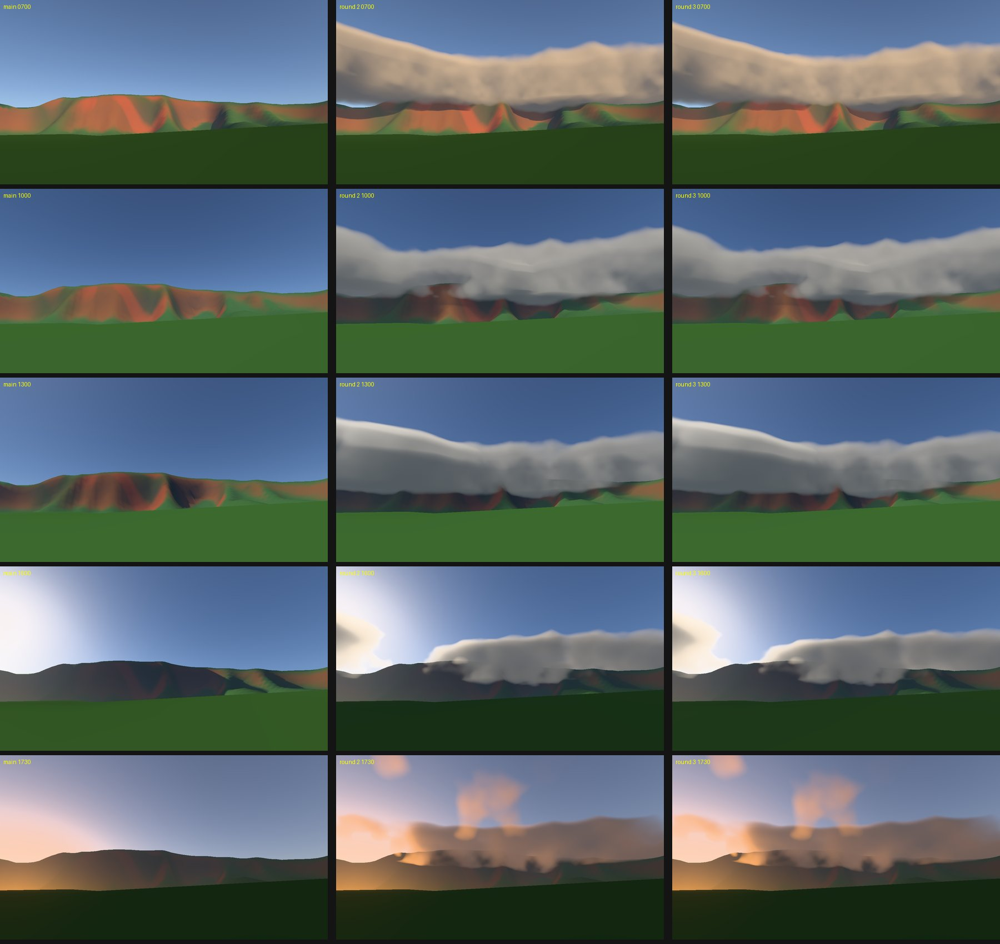

How the island walker works
A seed goes into a geology simulator that runs offline for about twenty seconds. What comes out is a tiled map of one volcanic island. A Metal app streams that map in around you as you walk, and lights it with a moving sun, a physical sky and trade-wind clouds.
The big picture
In plain words
There are two programs. islandgen plays out geology: it builds volcanoes, rains on them and lets rivers carve them for 800,000 years. IslandApp is the game: it puts you on the result and draws what a walker would see.
Why split it
Realism lives at the scale of whole drainage basins, which takes seconds to minutes to simulate. A frame takes 16 ms. So the slow, global work is baked once, and the app only reads it. They meet in one file format, the island bundle.
In the code
Sources/IslandGen + Sources/IslandGenCLI bake. Sources/Engine + Sources/IslandApp + Sources/Walker run. Sources/IslandCore is shared by both: grids, RNG, the bundle, lighting maths.
height.r32 (it wraps it in the same tile interface) or bake a quick 512² island itself if given nothing.
Coordinate conventions used everywhere
- World units are metres. x is east, y is north, z is up. The domain runs from (0, 0) at the south-west corner to (80,000, 80,000).
- Grids are row-major with row 0 at the south, and sample k sits at the centre of cell k. Preview PNGs flip this so north is at the top.
- Sea level is 0 m. The sea floor starts at about −1,800 m.
- Wind direction is the way the wind blows towards, in radians: the default 5π/4 means a trade wind from the north-east.
- The walker's heading is 0 = north, clockwise, unlike the maths angle above.
Code map
One Swift package, six targets and two test targets. Arrows mean "imports". Nothing in the runtime imports the generator except the app, which uses it for quick in-app bakes, viewpoint picking and the cloud bake fallback.
| File | Lines | What it holds | Owned by |
|---|---|---|---|
| IslandCore · shared | |||
Grid.swift | 89 | 2D Float grid, bilinear and Catmull-Rom sampling, the D8 neighbour table | both |
Random.swift | 77 | SplitMix64, stateless hash, value noise and fBm. Every random choice derives from the seed. | both |
Parallel.swift | 56 | Chunked concurrentPerform, SharedBuffer, PhaseTimer for --profile | both |
IslandBundle.swift | 202 | The bundle format: write, read tiles, mip pyramid, manifest | terrain |
TerrainTiles.swift | 156 | TerrainTiles protocol, BundleTerrain, GridTerrain, CPU TerrainHeights for the walker | lighting |
TerrainQuadtree.swift | 143 | CDLOD node selection with distance rings and min/max bounds | lighting |
TerrainLighting.swift | 110 | Baked sky visibility, sun visibility and the 16-sector horizon map | lighting |
Atmosphere.swift | 324 | Hillaire 2020 sky on the CPU: transmittance and multi-scattering LUTs, sky-view LUT, SH irradiance | lighting |
SunPath.swift | 92 | Sun direction at 21.4° N by hour and day, exposure adaptation, SunLight | lighting |
Look.swift | 229 | Albedos, haze, tone mapper, shared as Swift and as generated Metal source | lighting |
| IslandGen · bake | |||
Island.swift | 170 | The pipeline: Island.generate, flexure, saddle ponding | terrain |
VolcanicBase.swift | 221 | Shield volcanoes, rift zones, rock hardness | terrain |
FlankCollapse.swift | 214 | Giant landslide that leaves the pali headscarp | terrain |
Climate.swift | 98 | Annual rain: upslope gain × rain shadow | terrain |
PriorityFlood.swift | 105 | Pit filling (Barnes 2014) with a packed UInt64 heap | terrain |
StreamPower.swift | 454 | One erosion step: routing, stack, area, incision, waterfalls, deposition, waves, diffusion | terrain |
Refine.swift | 88 | Upsample to ~10 m with a slope-scaled residual | terrain |
Clouds.swift | 152 | Standing orographic cloud coverage map | clouds |
Realism.swift | 135 | Hypsometry, slopes, drainage density, Hack's law, pits | terrain |
GroundView.swift | 299 | CPU first-person renders and automatic viewpoints | both |
Preview.swift, PNG.swift | 187 | Hillshade, flow and grey previews; a dependency-free PNG encoder | both |
| Engine, Walker, IslandApp · runtime | |||
TerrainRenderer.swift | 730 | Pipelines, targets, per-frame encoding, snapshots, the shadow acceleration structure | lighting |
TerrainShaders.swift | 359 | Metal source: CDLOD vertex shader, terrain and sky fragments, shadows | lighting |
TerrainDetail.swift | 254 | Fine-detail clipmap: levels, which rows to refill as the camera moves, CPU height for the walker | detail |
DetailShaders.swift | 308 | Metal source: the detail recipe (rock, soil, rills, boulders) and the chain that hands each LOD its surface | detail |
CloudShaders.swift | 397 | Metal source: cloud density, march, resolve, composite, shadow map | lighting |
TerrainStreamer.swift | 173 | GPU tile cache and page table | lighting |
Walker.swift | 43 | First-person walking with a slope limit | lighting |
IslandApp.swift, IslandSource.swift, Snapshots.swift | 398 | Window and input, choosing the island source, headless --snapshot renders | lighting |
"Owned by" names the project thread that changes the file: terrain is "Terrain-first architecture plan", lighting is "Sun lighting implementation", clouds was the cloud bake thread, detail is "Fine ground detail near walker". The Metal shaders live as Swift strings so swift build needs no Xcode Metal toolchain step.
Baking an island
In plain words
Build two or three volcanoes, knock a giant landslide off the wet side, then repeat 400 times: work out where it rains, let water run downhill, and let rivers, waterfalls, soil creep and waves wear the land down.
Mechanism
A landscape evolution model: the stream power law solved implicitly (Braun & Willett 2013) on a 1024² grid, with rain recomputed every 50 steps so the climate follows the changing terrain.
In the code
Island.generate(_:) in Island.swift runs it all. IslandGenCLI/main.swift parses flags, calls it, then writes previews, the cloud map, lighting views, info.json and the optional bundle.
--size 1024 --steps 400). Blue ticks are rain recomputations. islandgen --profile prints the measured time per phase.3.1 Shield volcanoes and rock hardness
VolcanicBase.randomShields places 2 shields (70 %) or 3 along a "hotspot track" through the middle of the domain, 22–30 % of the domain apart with some jitter. Each shield gets a summit 2,600–3,400 m above the −1,800 m sea floor and 2 or 3 rift zones 8–19 km long, spread roughly evenly around the compass. The terrain at a point is the highest of the shields there, measured from each shield's skeleton (summit plus rift segments), so the volcanoes are elongated along their rifts like Waiʻanae and Koʻolau.
Before measuring distance the point is domain-warped by up to 2.5 km of noise, which turns perfect cones into lobed flanks. Lava-flow roughness of ±35 m is added on top, faded out near sea level so the coast doesn't fray into islets.
P is --land-exponent (2), c is --coast-slope (0.3), and along runs 0 at the summit to 1 at a rift tip, so rift crests fall away by 40 % (--rift-descent 0.4). Below the shoreline the flank drops as a 2 km shelf that steepens to a 0.15 slope. The older "classic" profile exp(−3·d1.4) put only a steep cap above sea level; the concave profile was the PR #11 fix for too little flat land.
VolcanicBase.generate. The dashed curve is the old classic profile. Moving "along the rift" shows how the crest drops toward a rift tip.Rock hardness is a second grid made in the same loop. It starts at 0.9, adds up to 0.35 in a 600 m band along rift zones (dike swarms resist erosion), and varies ±0.25 with broad noise, never below 0.4. Erodibility is divided by hardness, so the rifts end up as the sharp ridges. The band is kept narrow on purpose: a wide hard crest stopped valley heads from cutting back and left flat-topped ridges.
3.2 Flank collapse: where the pali comes from
Mature Hawaiian shields lose a sector of the flank facing the ocean. Oʻahu's Nuʻuanu slide is why the Koʻolau has a sheer windward wall. The generator does this before erosion, so rivers then attack a fresh cliff and carve amphitheater valleys back into it.
FlankCollapse.choose scores each shield's flank across its longest rift by how much it faces the wind and open ocean, then anchors on the real summit. apply traces the actual crest line in strips, smooths it, and cuts the flank away seaward of a curve 500–1,100 m behind the crest. The scarp curves seaward at both ends, fades where the crest drops, and gets 4–8 notches set back into it. Notch axes and the scarp face get weaker rock, so streams find them first.
Below the cliff, the debris becomes a coastal plain 55–85 m high at the foot, falling at 1.2 % for 2.5–4.5 km (like Kāneʻohe), then 6 % out to sea.

3.3 Rainfall
In plain words
Wind pushed uphill rains. Air that has already crossed mountains is drier. So the windward slopes get soaked and the lee stays dry, which is why the two sides of the island erode so differently.
Formula
rain = 0.6 m/yr × (1 + 40 · upslope) × exp(−6e-5 · crossed). Upslope is the terrain gradient along the wind after a 1.5 km smoothing; crossed is Σ height × km of land upwind, marched on a ~1 km grid.
Where
Climate.precipitation. A stand-in for the Smith & Barstad FFT model in the plan. Sea cells are clamped to sea level first, or the steep submarine flank would pull the rain out over the ocean. Three box blurs approximate a Gaussian; one box blur streaked the map.
3.4 The erosion loop
This is where most of the realism comes from. Each call to StreamPower.step advances the land by one 2,000-year time step. The model is:
| Term | Means | Default |
|---|---|---|
U | Uplift or subsidence, m/yr | 0 |
K·Am·Sn | River incision. A is rain-weighted drainage area (really discharge, m³/yr), S the slope to the cell downstream, K = 5e-6 ÷ hardness | m 0.5, n 1 |
G·Qs/Q | Deposition (Yuan et al. 2019): small, loaded streams drop sediment; big rivers carry theirs to sea | G 0.3 |
Kd·∇²h | Soil creep, smooths hillslopes | 0.02 m²/yr |
| waterfalls | Steep faces above a channel retreat sideways at 0.05 m/yr × √(Q/1e7) | min Q 3e5 |
| waves | Sea cliffs retreat 4 mm/yr facing the wind, 20 % of that in the lee | 0.004 |
One step does these passes in this order. The order matters: each pass reads what the one before wrote.
- Uplift (if
U ≠ 0) raises every non-edge cell. - Fill pits with Priority-Flood + ε, so every land cell has a strictly downhill path to the sea or the edge.The slowest phase, about 65 % of bake time. Seeding the heap only with sea cells that touch land made it several times faster (PR #4).
- Pick a receiver for each cell: one downhill neighbour, chosen at random weighted by slope.Plain steepest descent carves rivers along 0°, 45° and 90° grid lines. Random routing, seeded by a hash of (seed, step, cell), spreads flow like multiple-flow routing over many steps while staying deterministic.
- Build the stack: donor lists by counting sort, then each outlet's basin as one contiguous run ordered from mouth to source.Basins never share cells, so groups of basins run on separate cores with results identical to a serial run.
- Accumulate drainage area from the sources down, each cell adding cell-area × rain to its receiver.
- Incise from the mouth upwards with the implicit update
h ← (h + f·hr) / (1 + f), f = K·dt·Am/dx.Because the receiver is already updated, this is unconditionally stable: any time step works. Rivers never cut below sea level. For n ≠ 1 the cell is solved by Newton's method. - Waterfall retreat: any cell steeper than 0.6 above a channel neighbour carrying enough water is lowered so the face moves back while staying steep.This is the Lamb et al. 2007 mechanism for Hawaiian amphitheater heads: valley heads cut back and widen into bowls between knife-edge ridges (PR #7).
- Deposition, sources to mouth, carrying eroded volume along with the flow. A cell keeps a share G × (own discharge / total discharge) of what arrives, but never rises above its lowest donor.Builds fans and plains under cliffs without damming streams. G = 1 buried the foot of the pali; 0.3 keeps it.
- Landslides (off;
--critical-slope): over-steep cells collapse to a threshold angle. - Wave cutting: land next to the sea is cut toward 1 m below sea level, faster where the sea lies upwind.Without it every coast graded to a flat fringe; Oʻahu's coastal belt rises at about 5°.
- Diffusion: explicit soil creep. The pipeline caps the time step so Kd·dt/dx² stays under 0.2.

Why the implicit solver matters, in one example
An explicit update computes the new height from the old slope: h −= dt·K·Am·(h − hr)/dx. On a big river, K·Am·dt/dx can exceed 1, and the cell would overshoot below its receiver, then bounce back, and the whole profile oscillates. The implicit form uses the new slope instead, which gives the fraction above. With f = 10 a cell 100 m above its receiver drops to 9 m above it in one step, never past it. That is what lets one step cover 2,000 years.
Tuning lessons recorded so far
- Erodibility 1e-5 planed the windward side to sea level in 800 kyr; 5e-6 keeps the pali.
- Rift dike hardness is narrow (600 m) and modest (+0.35); wider or harder left flat-topped ridges.
- Faster waterfall retreat eats the summit plateau down to beaded crests; 0.05 m/yr with a 3e5 m³/yr threshold keeps it.
- Headwall retreat (seepage on every steep face) laid faces back instead of carving bowls, so it is off.
- Eight mechanisms for more flat land have been tried; the rejected ones are summarised on Scott's Mac in
~/JScottGraves/sweep-plain/andsweep-saddle/.
3.5 After erosion: flexure, ponding, a final fill
Flexure (--flexure 20): Oʻahu sits on the bulge raised by the Big Island's weight. The bake lifts land by 20 m × min(1, distance inland / 1.5 km), using a chamfer distance transform from the sea. Erosion had graded the coastal fringe flat to sea level; the tilt gives the 600 m coastal belt about 4.2° (Oʻahu 4.8°).
Saddle ponding (off, --saddle-fill): late in the run, lava floods the saddle between shields as a gently sloping, harder plain, like Schofield between the Waiʻanae and Koʻolau. It traded steep land for flat land almost one for one against the DEM, so it stays off.
A last Priority-Flood fill keeps "no pits" true after the flexure.
3.6 Standing cloud map
Trade-wind clouds over Oʻahu are mostly terrain-locked: they form where air is lifted over the windward slopes and crest, and dissolve a little way into the lee. Clouds.coverage follows the air from 40 km upwind to each 500 m cell over the smoothed terrain, keeping two numbers: vapour q and cloud water c.
- Rising air condenses vapour into cloud (900 m of ascent condenses all of it).
- Sinking air evaporates cloud (60 m of descent at 7.5 m/s).
- Cloud rains out over about 15 minutes, four times faster over the sea; air over the sea recovers its vapour over 20 km.
- Coverage = 1 − exp(−c / 0.08).
Two maps are written: normal trades (7.5 m/s) and strong trades (11 m/s). Over land, windward coverage is about 0.5 against 0.3 in the lee. It takes 0.04 s.

clouds.png). The app adds drifting cumulus and the daily cycle on top (§5.7).3.7 Refinement to ~10 m
Erosion at 10 m would cost minutes per step, so it runs at 78 m and --refine 8 upsamples the result to 8192² (9.8 m) in about 3 s. The coarse surface is resampled bicubically, and a fractal residual is added whose amplitude is 4 m on steep ground, 30 % of that on flat ground, fading to nothing in channels (drainage 1e5 → 1e7 m²) and within 5 m of sea level. A final pit fill keeps every cell draining.
One detail: whether a fine cell is land or sea follows the bilinear coarse surface. Bicubic overshoot had lifted 12 km² of shallow shelf into a chain of islets.
3.8 What a bake writes
| File | Contents | Used by |
|---|---|---|
height.r32 | Raw little-endian Float32 heights, 1024² | IslandApp, external tools |
hillshade.png, flow.png, rain.png, hardness.png | Previews: shaded relief, log drainage, rain, hardness | people |
clouds-trades.r32, clouds-strong.r32, clouds.json, clouds.png | Cloud coverage at 500 m and its metadata | IslandApp |
view-summit.png, view-ridge.png, view-coast.png, view-pali.png | CPU first-person renders from automatic viewpoints | people, CI |
scarp.json | Where the collapse scarp is, so app snapshots can aim at it | Snapshots |
info.json | Every parameter, land area, max height, windward vs leeward slope, realism metrics, cloud stats | people, CI annotation |
height-fine.r32 | The 8192² refined heights (with --refine) | tools |
<dir>/ bundle | height (refined if asked), rain, drainage, hardness, clouds-trades (with --bundle DIR) | IslandApp |
swift build -c release
.build/release/islandgen --seed 42 --refine 8 --bundle out/s42.bundle --out out
swift run -c release IslandApp out/s42.bundle # walk it
swift run -c release IslandApp out/s42.bundle --snapshot out/snaps --time 7,10.5,16
.build/release/islandgen --import oahu-8192-10m.r32 --cell 9.766 --bundle oahu.bundleThe island bundle
In plain words
A folder of small, compressed map squares at several zoom levels, like a web map. The app loads only the squares near you, plus blurry ones for the distance.
Format
Each channel is square, split into 256² tiles of UInt16, LZ4-compressed. Level 0 is full resolution; each level up is a 2×2 mean, down to one tile. value = offset + scale × sample, scale = range ÷ 65,535 (6 cm steps for a 4 km height range).
Where
IslandBundle.swift in IslandCore, format version 1. The renderer uploads the raw UInt16 tiles to the GPU unchanged and de-quantises in the shader.
s42.bundle/
├── manifest.json format, tileSize 256, seaLevel,
│ per channel: size, cellMetres,
│ levels, offset, scale
├── height/
│ ├── 0/0_0.lz4 … 31_31.lz4 8192² → 32×32 tiles
│ ├── 1/ … 4096² → 16×16
│ ├── …
│ └── 5/0_0.lz4 256² → 1 tile
├── rain/ drainage/ hardness/ (1024², 3 levels)
└── clouds-trades/ (160², 1 level)
tile name: <level>/<ty>_<tx>.lz4, row 0 southA test bakes, refines and bundles the same seed twice and compares every file byte for byte (testSameSeedBakesAnIdenticalBundle). The Oʻahu DEM goes into the same format with islandgen --import, so the real island and generated ones are walked by the same code.
The walking app
In plain words
Each frame: move the walker, decide which pieces of ground to draw at which detail, make sure their height tiles are loaded, work out the clouds, then colour every pixel with sun, sky, shadow and haze.
Mechanism
CDLOD terrain drawn from a streamed tile cache, a depth prepass, compute passes for cloud shadows and a reduced-resolution cloud march with temporal accumulation, then sky and terrain fragment shaders that composite it all in HDR before tone mapping.
Where
Coordinator.draw(in:) in IslandApp.swift handles input and time; TerrainRenderer.encode builds the frame. --snapshot DIR renders the same frames headless to PNG with per-pass GPU timings.
5.1 One frame
- Fine detail, in compute. Refills only the rows and columns of the detail clipmap that the camera has moved into (§5.4). Usually nothing, at walking pace a few hundred samples.
- Depth prepass. Terrain depth only, no colour. The cloud march needs it to stop at the ground, and it means the expensive terrain shader later runs once per pixel instead of once per overlapping triangle. Both passes use
invariantpositions so their depths match exactly. - Clouds, in compute. A 512² cloud shadow map over the island (~160 m texels); the cloud march at reduced resolution (at most 360 rows: half per axis at 720p, a quarter at 1440p) up to the terrain depth; a resolve that blends 10 % of the new frame into a reprojected history.
- Sky. One full-screen triangle at the far plane, shaded only where no terrain covers it: sky-view LUT, sun disc, open sea beyond the heightfield, clouds composited.
- Terrain. The same nodes again with the full fragment shader: albedo, sun, sky, bounce, shadows, cloud shadows, water, haze, clouds, tone mapping.
5.2 Streaming tiles to the GPU
TerrainStreamer owns a texture array of 512 slots, each a 256² r16Uint tile (64 MB). A page table (one Int32 per tile per level) says which slot holds each tile, or −1.
Each frame, every selected node asks for the tiles of its level and the next coarser level (for morphing). Missing tiles load on a concurrent background queue; up to 64 finished tiles are uploaded per frame. When the cache is full the least recently used tile not touched in the last three frames is evicted. The coarsest level is loaded at start-up and pinned, so there is always something to draw.
In the vertex shader, rawHeight looks a sample up in its level's page and, if the page is −1, halves the coordinate and tries the next level up. Ground that hasn't loaded yet is drawn blurrier, never missing.
Beyond the fine-detail clipmap (§5.4), the walker's ground height comes from TerrainHeights on the CPU, which decodes level-0 tiles into a small 64-tile LRU cache and interpolates bilinearly, matching what the renderer draws there.
5.3 CDLOD terrain
TerrainQuadtree.select walks a quadtree whose root covers the whole domain. A level-k node is 64 quads of cellMetres × 2k, and it is drawn if it lies inside its own ring but outside the finer level's ring; otherwise its four children are visited. Rings reach 3 node sizes from the camera. With a 10 m bundle that is 13 levels: five generated detail levels (§5.4), the finest reaching about 60 m at 31 cm spacing, then 8 data levels, the first reaching about 1.9 km at 10 m. Each ring out doubles in size and spacing.
Culling uses a min/max height pyramid of the overview padded by 40 m, tested against the six frustum planes. Selected nodes go to the GPU as instances: one draw for full nodes, one for quarter nodes drawn at their parent's level when only some children are inside their ring.
Morphing hides the seams. From 70 % of the way across a ring, each vertex slides its odd rows and columns onto the next level's grid and blends its height to the next level's surface (detail or data). A fully morphed vertex matches the coarser neighbour exactly, so nothing pops or cracks. Normals come from central differences on that same morphed surface.
Positions are subtracted from the camera before projection, so there is no vertex jitter 40 km from the origin.
5.4 Fine ground detail
In plain words
The bundle stops at one height every 10 m, which looks like smooth felt underfoot. So the app makes up the last few metres of roughness itself (broken rock, soil lumps, rills, boulders), but only right around you, and it makes them fit the place: rocky on steep crests, soft in valley bottoms, gullied where it rains.
Mechanism
Five clipmap levels centred on the camera, 5 m down to 31 cm, each 768² samples. A compute kernel fills them with a Catmull-Rom surface through the 10 m data plus noise steered by slope, curvature, rain, drainage and hardness. Five extra CDLOD rings draw them; the walker stands on them.
Where
TerrainDetail.swift owns the levels and their updates; DetailShaders.swift holds detailHeight (the recipe) and chainHeight. Plan item §4.1, PR #22. --detail off and --pitch DEG make before/after close-ups with --snapshot.
levelCount: halve until about 30 cm; none over grids coarser than 20 m).Scrolling, not rebuilding. Sample j of a level lives at texel j mod 768, so when the camera moves, the samples that are still wanted stay put and only the rows and columns that scroll in are computed. A level moves once the camera has drifted 4 of its samples, and waits (keeping its old region) until the 10 m tiles under its new region are resident. At walking pace that is a few hundred samples a frame.
Handing over. A CDLOD vertex at LOD l < 5 asks chainHeight for detail level l; if that level doesn't hold the point yet, the next coarser one answers, and past L4 the streamed data does. Morphing blends toward the next level's surface exactly as in §5.3, so the detail fades in with distance rather than popping.
No shimmer. Each level keeps only noise octaves at least twice its spacing, fully from four times (band). Coarser levels are smoothed copies of finer ones, which is what lets the morph between them be seamless.
Same rocks every time. The noise seed is a hash of the bundle's overview heights, so one island always gets the same boulders, including the imported Oʻahu DEM.
Standing on it. The clipmap is in shared memory. groundHeight reads the finest level whose last finished GPU update covers the walker's feet, bilinearly like the vertex shader, and falls back to the 10 m TerrainHeights elsewhere. prepareGround fills the levels synchronously before spawning or a snapshot.
Cost. About +3 ms GPU at 1440p; the worst of the 40 test views is 15.6 ms on Scott's M3.
| Layer | Shape | Strongest where | Amplitude |
|---|---|---|---|
| Base | Catmull-Rom through the 10 m samples (smooth, and through every sample). Also gives the slope and curvature the other layers read. | everywhere | — |
| Broken rock | Ridged noise, sharp crests and blocky hollows, 12 m wavelength down | steep ground (from ~14°, full at 45°), crests, dry slopes; less on soft rock | 0.8 m |
| Soil | Soft hummocks from 8 m, turning into clumpy tussocks below ~2.5 m | wherever it isn't rock; halved on valley floors | 0.22 m |
| Rills | Narrow grooves stretched 4:1 straight downhill, 6 m down, in 8 fixed directions blended | hillsides from ~5°, fading out between ~50° and 65°, deeper where it rains more; none on valley floors | 0.6 m |
| Boulders | At most one per 3 m cell, radius 0.3–1.1 m (mostly small), lumpy outline, flat top, facets, base sunk in | 1.5 % of cells anywhere, up to ~30 % on rock; fading out on slopes between 50° and 63° | up to ~0.5 m |
Two masks sit over all of it. Valley floors (drainage over about 105–106.5 m², or hollows in the 10 m surface, and not steep) are kept smooth like sediment. Beaches and sea: detail fades in from 0.5 to 4 m above sea level, sea cliffs keep it, and it is gone 3 m under water. Rain, drainage and hardness come from the bundle channels at about 1024²; a bare heightfield or DEM without them gets neutral defaults.

--detail off, right column on: seed 42's ridge (top) and near the Oʻahu summit (bottom). The shape is there, but up close the ground still reads flatter than it is, mainly because the albedo is uniform and the small relief casts no shadows (the shadow mesh is the coarse overview). Those belong to shading, not this layer.5.5 Sun, sky and the shading equation
The sun moves. SunPath.direction(hour:day:) gives the direction at Oʻahu's latitude (21.4° N) from local solar time and day of year (default day 288, mid-October). Atmosphere then computes sunlight after the atmosphere and the whole sky on the CPU following Hillaire 2020: Rayleigh, Mie (6× Hillaire's default aerosol, AOD ~0.03, for clean trade-wind air with sea salt) and ozone, with multiple scattering from a small LUT. The result is a 128×64 sky-view texture and 9 spherical-harmonic coefficients for sky light on any surface normal. Exposure adapts to the square root of the light change, so dawn reads darker than noon without going black.
SunPath.direction. The cloud numbers use the renderer's daily cycles: base = 600 − 200·cos(2π(h−14)/24) m and orographic gain = 0.85 + 0.15·cos(2π(h−7)/24).Each terrain pixel is lit like this (terrainFragment):
| Piece | Where it comes from |
|---|---|
| albedo | Look.albedo: grass by height, cliff green on slopes, red soil and dark basalt breaking through in patches on steep spurs, a sand strip within 1–3 m of the sea. Authored as sRGB swatches and converted to linear once; the pale early renders came from using sRGB numbers as linear. |
| shadow | Terrain shadow: horizon map, plus ray tracing where it's in doubt (§5.6) |
| cloudShadow | The 512² cloud shadow map, read where the sun ray meets the cloud base; never darker than 30 % |
| skySH · skyVisibility | Sky light for this normal, times the share of sky the terrain leaves open (baked cosine-weighted in 16 directions out to 6 km) |
| bounce | One cheap bounce: the blocked sky and the ground a tilted face looks at return light, assuming neighbours share this albedo and are half in sun |
| after that | Water reflects the sky by Fresnel with distance-dependent roughness; haze blends toward the sky colour behind (45 km scale, 85 % max); clouds composite; then the Khronos PBR Neutral tone mapper without its toe. The target is _srgb, which encodes on write. |
Look.metalPrelude generates the albedo, tone mapper and water functions as Metal source from the same Swift constants, so the CPU ground views and the GPU stay alike.

5.6 Terrain shadows
Two methods share the work.
Horizon map. At start-up TerrainLighting.bake marches 16 compass sectors out to 25 km from every overview cell (three marches per sector, keeping the highest) and stores each sector's horizon angle as a byte. Any sun position can then be tested by comparing its elevation with the horizon at its azimuth.
Ray tracing. A Metal acceleration structure is built over a mesh of the same overview. Where the horizon map puts the sun more than ~3° clear of both neighbouring sectors, or ~3° below both, the pixel is decided without rays. Only the uncertain band traces: two rays across the sun's 0.53° disc, and two more only where they disagree, softened over about a degree. Beyond 4 km two rays are enough.
The shadow mesh is coarser than the drawn terrain, so a valley floor can sit under it. Rays ignore faces seen from below, which lets them out.
5.7 Trade-wind clouds
In plain words
A layer of cumulus between a few hundred metres and 2 km. It sits where the bake said clouds stand, plus drifting puffs off the ocean. Walking on the crest of the range, you're inside it.
Mechanism
A 2.5D ray-marched layer in the Horizon Zero Dawn / Frostbite style: coverage from a map, a height profile, fBm noise advected by the wind, Beer–Lambert light with dual-lobe phase and multi-scattering octaves, temporal accumulation.
Where
CloudShaders.swift: cloudDensity, marchClouds, kernels cloudMarch, cloudResolve, cloudShadowMap, and compositeClouds used by both fragment shaders.
- Shadow map. For each of 512² texels over the island, march 6 samples up through the layer toward the sun. Terrain reads it instead of marching per pixel.
- March at reduced resolution: 24 steps to the terrain (32 for sky), quadratically spaced so steps are short near the camera; per-pixel jitter that shifts every frame; a 3-sample light march toward the sun (~550 m); noise detail dropped on long steps where it would only alias.
- Resolve. Reproject the history through the cloud's own distance, keep it only where the same surface lay behind, clamp it to this frame's 3×3 neighbourhood, blend 10 % new.
- Composite at full resolution with a depth-aware upsample, so cloud doesn't bleed across a ridge silhouette.

5.8 Walker and controls
Walker stores a position in Double metres, feet height, yaw and pitch. Walking is 1.4 m/s, running 4 m/s; a step is refused if it would climb steeper than 1:1. Its feet sit on the fine-detail surface where it exists (§5.4). Eye height is 1.7 m. Fly mode (F) moves at 60 m/s, 400 with Shift, and never goes below 2 m over the ground. The app starts on the island's highest point.
The title bar is the debug overlay: time of day, GPU ms, nodes drawn, resident tiles and tiles still loading.
| Key | Does |
|---|---|
| W A S D | walk |
| Shift | run / fly fast |
| drag | look |
| F | toggle fly; Space/C up/down |
| [ ] | scrub time, 1.5 h per second |
| T | let time run, 1 h per 20 s |
Measuring realism
Realism.measure scores any heightfield the same way, generated or real: hypsometry (how land area is spread over height), slope histogram, the share of cliffs over 40°, drainage density, Hack's exponent and pits. islandgen --score runs it on a DEM; every bake puts it in info.json. The real Oʻahu USGS DEM is the yardstick.
renders/inland/sweep-final.md, coast slope 0.3, wave retreat 0.004, leeward 0.2; before flexure). The hypsometric integral already matches (0.176–0.179 vs 0.176), as do drainage density (0.67 vs 0.69) and Hack's exponent (0.48–0.49 vs 0.58, a little low). Flat land is the big miss.Determinism, tests and CI
Same seed, same island, byte for byte. Every random choice comes from SplitMix64 seeded from the seed, or from a stateless hash of (seed, position). Parallel passes split work so chunks never write the same cell, and the erosion stack keeps basins whole, so a run on 12 cores equals a serial run. Even the priority queue breaks height ties on cell index.
CI (GitHub Actions, macOS 15) builds release, runs the tests, bakes a 512² island and posts its info.json as an annotation, then tries headless app snapshots (allowed to fail: hosted runners' virtual GPUs don't support everything). Build errors are posted as annotations too, because the cloud sessions can't read CI logs.
Visual checks happen on Scott's M3: IslandApp … --snapshot DIR writes the app's own Metal frames as PNGs plus timings.csv with depth, cloud and shading milliseconds.
| Tests (selection) |
|---|
testIslandIsDeterministic, testSameSeedBakesAnIdenticalBundle |
testPriorityFloodLeavesNoPits, testDrainageAreaIsConserved |
testWavesCutTheWindwardCoastFaster, testFlexureTiltsTheCoastalFringe |
testRefineAddsDetailWithoutPits, testPondBuriesOnlyTheDeepestShareOfTheSaddle |
testCloudsSitOnWindwardSlopes, testRealismOfAConeIsland |
testBundleRoundTripsTilesAndMips, testGridTerrainServesItsHeightsAsTiles |
testQuadtreeTilesTheIslandWithFinerNodesNearTheCamera |
testSunPathCrossesTheSouthAtNoonInOctober, testLowSunIsRedderAndDimmer |
testSkyIrradianceSHMatchesDirectIntegration, testHorizonMapSeesAWall |
testGreyCardUnderHighSunLooksMidGrey, testSteepPaliStaysGreen |
Status against the Milestone 1 plan
The plan is plan/terrain-architecture-and-milestone-1.md in the project files. Since it was approved, Scott moved time of day and trade-wind clouds into scope and approved hardware ray tracing.
| Plan item | State | What exists |
|---|---|---|
| Package skeleton, CLI, CI | done | As in §2; CI on macOS 15 |
| Bundle format v1 | done | LZ4 UInt16 tiles, mips, manifest; no ASTC |
| 3.1 Volcanic base | mostly | Shields, rifts, hardness, flank collapse. No lava-flow particle layering, no caldera. |
| 3.2 Climate | stand-in | Upslope × rain-shadow model, not the Smith–Barstad FFT model |
| 3.3 Uplift, subsidence, sea level | partial | Uplift flag (0) and 20 m flexure; no sea-level history or reef terraces |
| 3.4 Stream power erosion | done (CPU) | Implicit, random routing, deposition, waterfalls, parallel. Metal port not started. |
| 3.5 Thermal erosion, landslides | off | Threshold slope exists, disabled; flank collapse covers the big one |
| 3.6 Coast, reef, sediment | partial | Wave-cut cliffs and deposition; no reef, beaches only as albedo |
| 3.7 Derived maps | partial | Height, rain, drainage, hardness, clouds. No sediment depth, curvature or material IDs. |
| 3.8 Refine to 10 m | first cut | Residual noise, no erosion pass; cliffs too soft at 10 m |
| 3.9 Determinism | done | Byte-identical bundles, tested |
| 4.1 Runtime detail 10 m → 25 cm | first cut | Shape only, to 31 cm, steered by the bake (§5.4). No material or albedo variation and no small-scale shadows yet. |
| 4.2 LOD and streaming | done | CDLOD with morphing, tile cache + page table (instead of sparse textures and mesh shaders) |
| 4.3 Shading | partial | Hillaire sky, aerial perspective, RT + horizon shadows, flat water. Procedural albedo only: no texture layers, triplanar or moisture-driven materials. |
| Time of day, clouds (added) | done | Moving sun, trade-wind clouds with shadows |
| 4.4 Walker | basic | Slope limit and fly mode; no capsule, step-up or sliding |
| Debug overlay | basic | Title bar: time, GPU ms, nodes, tiles |
| Real DEM import | done | Oʻahu at 10 m as a bundle; scoring |
| 60 fps at 1440p, bake < 10 min | in progress | Bake is well under; frame time depends on view, clouds and shadows are the cost |
Open threads worth knowing
- Flat land (§6) is the biggest terrain realism gap; refined cliffs at 10 m are the second.
- Ground up close now has relief, but reads flat because albedo is uniform and rocks cast no shadows; that is the next shading gap.
- Shaded pali bowls can render too dark; sky ambient and bounce helped. A faint shelf line in the cloud bank on the pali view persists, and motion ghosting of the cloud history is unchecked.
- The rain model is a stand-in; the research notes recommend a linear feedback precipitation model.
How we got here
All twenty-two pull requests merged on 2026-10-16, in order. Each one is a single idea, so this list doubles as a map of why the code looks the way it does.
| PR | Change | Area |
|---|---|---|
| 1 | Milestone 1 skeleton: generator, bake CLI, Metal viewer | both |
| 2 | Oʻahu-like terrain; CPU ground views and app snapshots | terrain |
| 3 | Windward pali: flank collapse, coastal plain, deposition | terrain |
| 4 | Bake about 4× faster (Priority-Flood seeding, packed heap, per-basin parallelism) | terrain |
| 5 | Real-world colours, baked sky and sun occlusion, sky and water | lighting |
| 6 | Moving sun and ray-traced sun shadows | lighting |
| 7 | Amphitheater-headed valleys: waterfall retreat | terrain |
| 8 | Bake standing trade-wind cloud coverage | clouds |
| 9 | Realism metrics and real-DEM scoring | terrain |
| 10 | Hillaire sky, SH ambient, haze from the sky, ground bounce | lighting |
| 11 | Flatter lowlands: concave shield profile scored against Oʻahu | terrain |
| 12 | Ray-marched trade-wind clouds and cloud shadows | lighting |
| 13 | Steeper wave-cut coasts and descending rift crests | terrain |
| 14 | Clouds at half resolution with temporal accumulation | lighting |
| 15 | Tilt the coastal fringe with flexural uplift | terrain |
| 16 | Optional lava plain between the volcanoes (off by default) | terrain |
| 17 | 10 m refinement and the island bundle format | terrain |
| 18 | Import the Oʻahu DEM as a bundle; bundle determinism test | terrain |
| 19 | Streaming CDLOD terrain from bundles, lighting and clouds at 1440p | lighting |
| 20 | Trace sun rays only where the horizon map is in doubt | lighting |
| 21 | This explainer page | docs |
| 22 | Fine ground detail near the walker: GPU clipmap to 31 cm | detail |
Background reading lives in the project files: research/hawaiian-geology.md (what shapes the islands), research/terrain-papers.md (erosion and routing literature), research/global-illumination.md (lighting plan) and research/clouds.md (cloud plan).
Glossary
- Pali
- Hawaiian for cliff. Here, the long windward wall left by the flank collapse, like the Koʻolau above Kāneʻohe.
- Shield volcano
- A broad, gently sloping volcano built by runny lava. Oʻahu is two: Waiʻanae and Koʻolau.
- Rift zone
- A line out from the summit where lava erupted; it becomes the island's main ridge.
- Amphitheater valley
- A valley that ends upstream in a steep-walled bowl rather than narrowing to a point; made by retreating waterfalls.
- Stream power law
- Erosion rate = K·Am·Sn: rivers with more water and steeper beds cut faster.
- Drainage area A
- How much land drains through a cell; here weighted by rain, so it is really annual discharge.
- Receiver / donor
- The neighbour a cell drains to, and the cells that drain into it.
- Priority-Flood
- A pit-filling algorithm: grow inward from the sea in height order, raising any cell that would trap water.
- Hypsometric integral
- Mean land height as a share of total relief. Oʻahu is 0.176: most land is low.
- Hack's law
- Main stream length grows as basin areah, with h about 0.5–0.6 in real landscapes.
- Drainage density
- Kilometres of channel per km² of land.
- Flexure
- The crust bending under a load; here the bulge that lifts Oʻahu's coast.
- Mip level
- A copy of a map at half the resolution of the one below it.
- Page table
- A lookup from tile coordinates to the GPU slot that holds the tile, or "not loaded".
- CDLOD
- Continuous Distance-Dependent Level of Detail (Strugar 2009): quadtree terrain with vertex morphing between levels.
- Clipmap
- A stack of same-size grids centred on the camera, each covering twice the area at half the resolution of the one inside it, refilled only where the camera moves.
- Horizon map
- For each cell, how high the terrain horizon rises in each compass direction.
- Spherical harmonics (SH)
- Nine numbers per colour that describe the sky's light on a surface of any orientation.
- Sky-view LUT
- A small texture of sky colour in every direction, rebuilt when the sun moves.
- Temporal accumulation
- Blending each frame's noisy result into a history so it smooths out over a few frames.
- Trade-wind inversion
- A warm layer near 2 km that caps cumulus tops flat.